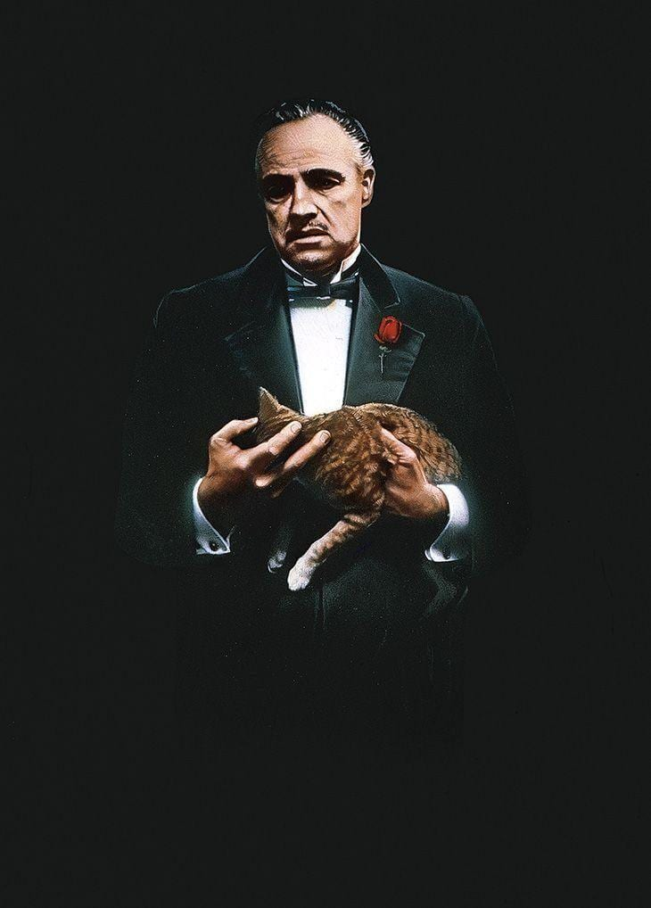

O jogo da Imitação

Durante a Segunda Guerra Mundial, o governo britânico monta uma equipe que tem por objetivo quebrar o Enigma, o famoso código que os alemães usam para enviar mensagens aos submarinos.
Um de seus integrantes
é Alan Turing (Benedict Cumberbatch), um matemático de 27 anos estritamente lógico e focado
no trabalho, que tem problemas de relacionamento com praticamente todos à sua volta.
Bastardos Inglórios

Bastardos Inglórios, na Segunda Guerra Mundial, a França está ocupada pelos nazistas. O tenente Aldo Raine (Brad Pitt) é o encarregado de reunir um pelotão de soldados de origem judaica, com o objetivo de realizar uma missão suicida contra os alemães.
O objetivo é matar o maior número possível de nazistas, da forma mais cruel possível. Paralelamente Shosanna Dreyfuss (Mélanie Laurent) assiste a execução de sua família pelas mãos do coronel Hans Landa (Christoph Waltz), o que faz com que fuja para Paris.
Lá ela se disfarça como operadora e dona de um cinema local, enquanto planeja um meio de se vingar..
O Poderoso Chefão

Don Vito Corleone (Marlon Brando) é o chefe de uma "família" de Nova York que está feliz, pois Connie (Talia Shire),
sua filha, se casou com Carlo (Gianni Russo). Porém, durante a festa, Bonasera (Salvatore Corsitto) é visto no escritório de Don Corleone pedindo "justiça",
vingança na verdade contra membros de uma quadrilha, que espancaram barbaramente sua filha por ela ter se recusado a fazer sexo para preservar a honra. Vito discute,
mas os argumentos de Bonasera o sensibilizam e ele promete que os homens, que maltrataram a filha de Bonasera não serão mortos, pois ela também não foi, mas serão severamente castigados.
no trabalho, que tem problemas de relacionamento com praticamente todos à sua volta.